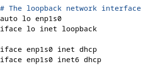
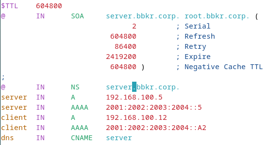
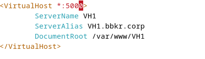
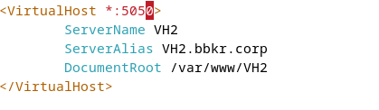
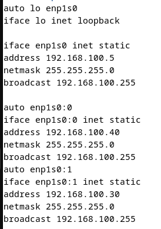
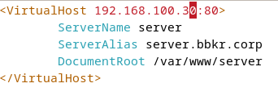
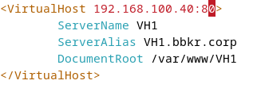
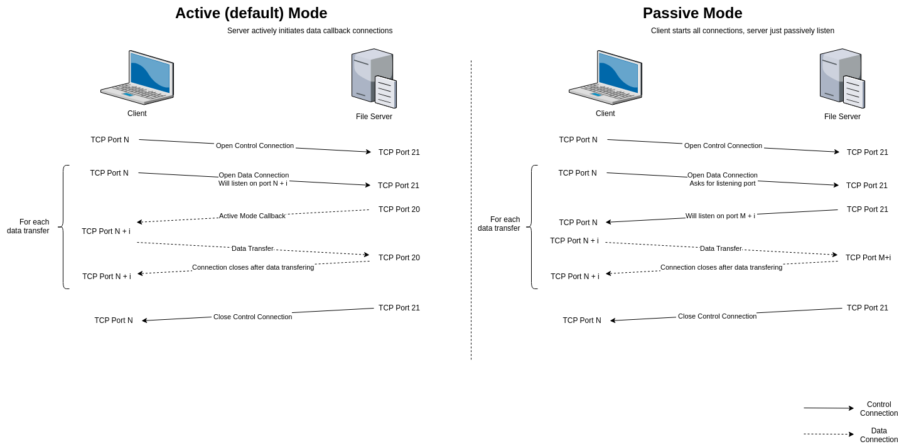
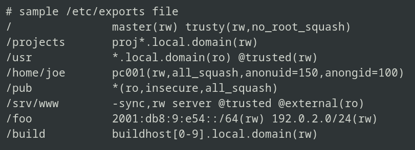

Quick Notes
- Radvd splits a MAC address into 2 and inserts
ff:fein the middle - Globally routable prefixes are of type
2000::/3(Global Unicast) - Private IPv4 Ranges:
10.0.0.0 - 10.255.255.255(10.0.0.0/8)172.16.0.0 - 172.31.255.255(172.16.0.0/12)192.168.0.0 - 192.168.255.255(192.168.0.0/16)
- no spoof: Prevents hostname spoofing by ensuring forward and reverse DNS lookups match
SSH Port Forwarding
-L: Local port forwarding - Forwards a local port to a remote service.
ssh -L 8080:remote-server.com:80 user@remote-host-R: Remote port forwarding - Forwards a remote port to a local service.
ssh -R 9090:localhost:80 user@remote-hostDNS Resolution Types
Recursive: The DNS server does all the work.
Iterative: The client receives hints (other servers to contact) and handles it themselves.
DHCP Configuration
Server Setup
- Modify
/etc/dhcp/dhcpd.confand/etc/dhcp/dhcpd6.conf - Configure static IP and hostname on the server
- Add listening interfaces to
/etc/default/isc-dhcp-server - Restart the service:
systemctl restart isc-dhcp-server
Note: For fixed addresses, add the subnet line and then add the fixed address using host hostname
Client Configuration
Configure the client to use DHCP for network settings.
IPv6 with Radvd
Check man radvd.conf (EXAMPLES section). Set SendAdvert on in the configuration file.
DNS Configuration
Zone Files
Template for <domain>.hosts file (use /etc/bind/db.255 as reference)
Forward Zone
$TTL 86400
@ IN SOA ns1.domain.com. admin.domain.com. (
2024010101 ; Serial
3600 ; Refresh
1800 ; Retry
604800 ; Expire
86400 ) ; Minimum TTL
IN NS ns1.domain.com.
ns1 IN A 192.168.21.1
www IN A 192.168.21.10Reverse Zone
Create <domain>.rev file with PTR records:
$TTL 86400
@ IN SOA ns1.domain.com. admin.domain.com. (
2024010101 ; Serial
3600 ; Refresh
1800 ; Retry
604800 ; Expire
86400 ) ; Minimum TTL
IN NS ns1.domain.com.
1 IN PTR ns1.domain.com.
10 IN PTR www.domain.com.Important: Move zone files to /var/cache/bind
Zone Configuration
Edit /etc/bind/named.conf.local and create zones:
// Domain zone
zone "str.tp" {
type master;
file "str.tp.hosts";
};
// IPv4 reverse zone
zone "21.168.192.in-addr.arpa" {
type master;
file "str.tp.rev";
};
// IPv6 reverse zone
zone "4.0.0.2.3.0.0.2.2.0.0.2.1.0.0.2.ip6.arpa" {
type master;
file "str.tp.rev6";
};Resolver Configuration
Check /etc/resolv.conf on both client and server:
domain domain-name
nameserver ip-of-dns-serverLDAP Configuration
Create a Domain
Generate a hashed password:
slappasswd -h {MD5} -s password > /home/user/database.ldifCreate database configuration file:
dn: olcDatabase={2}mdb,cn=config
objectClass: olcDatabaseConfig
objectClass: olcMdbConfig
olcDatabase: {2}mdb
olcSuffix: dc=serveur,dc=ltr,dc=tp
olcDbDirectory: /var/lib/ldap
olcRootDN: cn=admin,dc=serveur,dc=ltr,dc=tp
olcRootPW: {MD5}yourhashedpassword
olcAccess: {0}to attrs=userPassword by self write by anonymous auth by dn="cn=admin,dc=serveur,dc=ltr,dc=tp" write by * none
olcAccess: {1}to * by * readApply configuration:
ldapadd -Y EXTERNAL -H ldapi:/// -f /home/user/database.ldifVerify:
ldapwhoami -x -D "cn=admin,dc=serveur,dc=ltr,dc=tp" -w yourpasswordCreating Entries
Root Domain
dn: dc=ltr,dc=tp
objectClass: top
objectClass: domain
dc: ltrOrganizational Unit (OU)
dn: ou=people,dc=example,dc=com
objectClass: top
objectClass: organizationalUnit
ou: peopleGroup
dn: cn=staff,ou=people,dc=example,dc=com
objectClass: top
objectClass: posixGroup
cn: staff
gidNumber: 1001User
dn: uid=john.doe,ou=people,dc=example,dc=com
objectClass: inetOrgPerson
objectClass: posixAccount
objectClass: shadowAccount
uid: john.doe
sn: Doe
givenName: John
cn: John Doe
uidNumber: 1000
gidNumber: 1001
userPassword: {SSHA}encryptedPasswordHere
homeDirectory: /home/john.doe
loginShell: /bin/bash
mail: john.doe@example.comAdd entries:
ldapadd -x -D "cn=admin,dc=example,dc=com" -w password -f populate.ldifVerify creation:
ldapsearch -x -b "dc=example,dc=com"Modifying Data
Replace Attribute
dn: uid=john.doe,ou=people,dc=example,dc=com
changetype: modify
replace: mail
mail: john.newemail@example.comDelete Entry
dn: uid=john.doe,ou=people,dc=example,dc=com
changetype: deleteAdd Attribute
dn: uid=john.doe,ou=people,dc=example,dc=com
changetype: modify
add: mail
mail: john.newemail@example.comApply modifications:
ldapmodify -x -D "cn=admin,dc=ctr,dc=tp" -w Pa$w0rd -f modify.ldifAccess Control (ACL)
Structure: olcAccess: {0}to <target> by <users> <permission>
dn: olcDatabase={2}mdb,cn=config
changetype: modify
add: olcAccess
olcAccess: {0}to attrs=userPassword by self write by anonymous auth by dn="cn=admin,dc=serveur,dc=ltr,dc=tp" write by * none
-
add: olcAccess
olcAccess: {1}to * by * readApply ACL:
ldapmodify -Y EXTERNAL -H ldapi:/// -f acl.ldifScope Options
| Scope | Matches | Includes DN? | Includes Sublevels? |
|---|---|---|---|
base |
Only exact DN | Yes | No |
one |
Direct children | No | No (1 level only) |
children |
Direct children | No | No (1 level only) |
subtree |
DN + all descendants | Yes | Yes |
Client Login Configuration
- Install packages:
apt-get install libnss-ldap nss-updatedb libnss-db - Configure
/etc/nslcd.conf:uri ldap://ldap.example.com/ base dc=example,dc=com binddn cn=admin,dc=example,dc=com bindpw yourpassword - Run
sudo pam-auth-updateand enable:- Unix authentication
- LDAP Authentication
- Create home directory on login
- Edit
/etc/nsswitch.conf:passwd: files ldap group: files ldap shadow: files ldap - Restart nslcd:
sudo systemctl restart nslcd - Test:
getent passwd john.doe getent group staff
SNMP Configuration
SNMP Commands
snmptranslate
Translate between OID numbers and names.
# Name to OID
snmptranslate -On IF-MIB::ifDescr
# OID to name
snmptranslate -IR 1.3.6.1.2.1.1.3.0
# Get numerical OID
snmptranslate -Ib interfacessnmpget
Request a specific OID from a device.
# SNMPv2c
snmpget -v 2c -c public 192.168.1.1 IF-MIB::ifDescr.1
# SNMPv3
snmpget -v 3 -u myUser -l authPriv -a MD5 -A myAuthPass -x DES -X myPrivPass 192.168.1.1 IF-MIB::ifDescr.1snmpgetnext
Get the next object after an OID (iterate through SNMP tree).
snmpgetnext -v 2c -c public 192.168.1.1 IF-MIB::ifDescr.1snmpbulkget
Efficient multiple data retrieval (SNMPv2c and SNMPv3 only).
snmpbulkget -v 2c -c public -Cn0 -Cr10 192.168.1.1 IF-MIB::ifDescr| Flag | Meaning |
|---|---|
-Cn0 |
Get 0 non-repeaters (all OIDs will repeat) |
-Cr10 |
Get 10 values for each OID |
snmptable
Display entire SNMP table in readable format.
snmptable -v 2c -c public 192.168.1.1 IF-MIB::ifTablesnmpset
Modify SNMP data on remote agent.
snmpset -v 2c -c private 192.168.1.1 IF-MIB::ifAdminStatus.2 i 2Data Types: i=integer, u=unsigned, s=string, x=hex, a=IP address, t=timeticks, o=OID
snmpwalk
Walk through an entire branch.
snmpwalk -v 2c -c public 192.168.1.1 IF-MIB::ifDescrSNMP Traps
Agent Configuration
File: /etc/snmp/snmpd.conf
# Send SNMPv1 traps
trapsink localhost mycom
# Send SNMPv2c traps
trap2sink localhost mycom
# Enable authentication failure traps
authtrapenable 1Manager Configuration
File: /etc/snmp/snmptrapd.conf
# Accept traps and log them
authCommunity log mycomRestart services:
sudo systemctl restart snmpdLaunch trap daemon:
sudo snmptrapd -f -LeTest trap with wrong community:
snmpwalk -v2c -c wrongcom 192.168.0.1 -IR udpTable
snmptrap -v2c -c mycom 192.168.0.2 "" ucdStart sysContact.0 s "Hello"View Access Control
File: /etc/snmp/snmpd.conf
view systemonly included .1.3.6.1.2.1.1
view systemonly included .1.3.6.1.2.1.25.1
rocommunity public default -V systemonly
rocommunity6 public default -V systemonlySNMPv3 User Creation
File: /var/lib/snmp/snmpd.conf
createUser authPrivUser SHA-512 myauthpassphrase AES myprivpassphraseGrant access (in /etc/snmp/snmpd.conf):
rouser authPrivUser authPriv -V systemonlyIptables Firewall
Tables and Chains
Filter Table (default)
- INPUT: Controls packets destined for local system
- OUTPUT: Controls packets generated by local system
- FORWARD: Controls packets routed through system
NAT Table
- PREROUTING: DNAT (address translation towards inside)
- POSTROUTING: SNAT (address translation towards outside)
- OUTPUT: Alters locally generated packets
Mangle Table
Used for packet tagging for QoS. Supports all chains from Filter and NAT tables.
Targets (-j)
- ACCEPT: Allows the packet
- DROP: Silently drops the packet
- REJECT: Drops and sends error response
- LOG: Logs packet details
- MASQUERADE: NAT for dynamic IPs (POSTROUTING only)
- SNAT: Source NAT (POSTROUTING only)
- DNAT: Destination NAT (PREROUTING only)
- RETURN: Passes to previous rule
Common Commands
Listing Rules
iptables -L -v -n # List all rules
iptables -t nat -L -v -n # List NAT table rulesAdding Rules (-A)
iptables -A INPUT -p tcp --dport 22 -j ACCEPT # Allow SSH
iptables -A INPUT -p icmp -j DROP # Block ICMPDeleting Rules (-D)
iptables -D INPUT -p icmp -j DROPPolicies (-P)
iptables -P INPUT DROP # Drop all incoming by default
iptables -P FORWARD DROP # Drop forwarded by default
iptables -P OUTPUT ACCEPT # Allow outgoing by defaultCustom Chains
iptables -N CUSTOM_CHAIN # Create custom chain
iptables -X CUSTOM_CHAIN # Delete custom chainFlush Rules
iptables -F # Flush predefined chains
iptables -X # Flush user-made chainsCommon Options
-p tcp/udp/icmp- Protocol-i eth0- Input interface-o eth0- Output interface-s 192.168.1.0/24- Source IP-d 192.168.1.0/24- Destination IP--sport 80- Source port--dport 80- Destination port
Connection States
iptables -A INPUT -m state --state ESTABLISHED,RELATED -j ACCEPT
iptables -A INPUT -m state --state NEW -p tcp --dport 22 -j ACCEPT- NEW: First packet of new connection
- ESTABLISHED: Established connection
- RELATED: Related to existing connection
- INVALID: Corrupted or unknown packet
Example Rules
# Allow SSH output
iptables -A OUTPUT -o enp0s3 -p tcp --dport 22 -j ACCEPT
# Allow established connections
iptables -A INPUT -i enp0s3 -p tcp -m state --state ESTABLISHED,RELATED -j ACCEPT
# Reject ping to specific IP
iptables -A INPUT -d 192.168.100.1 -p icmp --icmp-type echo-request -j REJECTIPv6: Use ip6tables with the same syntax
SSH Configuration
Basic Connection
ssh username@serverManaging Host Keys
Remove a host key (after server key change):
ssh-keygen -R hostnameFile Transfers
SCP (Secure Copy)
# Copy to remote
scp file.txt user@server:/home/user/
# Copy from remote
scp user@server:/home/user/file.txt .
# Copy directory recursively
scp -r my_folder user@server:/home/user/SFTP (Secure FTP)
sftp user@serverCommands: ls, pwd, cd, lcd, get, put, exit
SSH Key Authentication
# Generate key pair
ssh-keygen -t rsa -b 4096
# Copy public key to server
ssh-copy-id -i ~/.ssh/id_rsa.pub user@serverSSH Config File
Create ~/.ssh/config:
Host myserver
User username
Hostname server.example.com
Port 22
IdentityFile ~/.ssh/id_rsaConnect with: ssh myserver
Running Remote Commands
# Execute command
ssh user@server "command"
# Execute without opening session
ssh -n user@server commandSSH Tunneling (Port Forwarding)
Local Port Forwarding (-L)
ssh -L 8080:localhost:80 user@serverAccess remote service at localhost:8080
Remote Port Forwarding (-R)
ssh -R 9000:localhost:3000 user@serverExpose local port 3000 as port 9000 on remote server
SSH Connection Process
- Client contacts server on port 22
- Exchange protocol versions
- Server sends host key, server key, and random sequence
- Generate common session ID (MD5 hash)
- Client sends encrypted session key
- Secure channel established
- Client authentication (password or key-based)
Apache Web Server
Configuration Files
/etc/apache2/apache2.conf- Main configuration/etc/apache2/ports.conf- Port configuration/etc/apache2/sites-available/- Virtual host configs/etc/apache2/sites-enabled/- Enabled sites
Check syntax: apache2ctl configtest
Main Configuration
File: /etc/apache2/apache2.conf
Timeout 300
KeepAlive on
MaxKeepAliveRequests 100
KeepAliveTimeout 15
MinSpareServers 4
MaxSpareServers 4
StartServers 5
MaxClients 20
MaxRequestsPerChild 500Ports Configuration
File: /etc/apache2/ports.conf
Listen 80
NameVirtualHost 192.168.21.7:80Virtual Host Setup
- Create directory:
mkdir /var/www/mysite - Add index file:
echo "<h1>My Site</h1>" > /var/www/mysite/index.html - Create config in
/etc/apache2/sites-available/mysite.conf - Enable site:
a2ensite mysite - Restart:
systemctl restart apache2
Basic Virtual Host
<VirtualHost *:80>
ServerName mysite.example.com
ServerAlias www.mysite.example.com
DocumentRoot /var/www/mysite
<Directory /var/www/mysite>
Options Indexes FollowSymLinks
AllowOverride All
Require all granted
</Directory>
ErrorLog ${APACHE_LOG_DIR}/mysite_error.log
CustomLog ${APACHE_LOG_DIR}/mysite_access.log combined
</VirtualHost>Virtual Hosting by Port
Add to ports.conf:

Listen 8080
NameVirtualHost *:8080Configure site files:
 Virtual Hosting by IP
Add IP alias:
ip addr add 192.168.21.8/24 dev eth0Edit configuration files:
 Edit ports file:

Access Control
<Directory /var/www/site1>
<RequireAll>
Require ip 192.168.1.0/24
AuthType Basic
AuthName "Restricted Area"
AuthUserFile /var/www/site1/.htpasswd
Require valid-user
</RequireAll>
</Directory>Create password file:
htpasswd -c -m /var/www/site1/.htpasswd usernameSSL/TLS Configuration
- Enable SSL module:
a2enmod ssl - Generate CA and certificates
- Configure virtual host for port 443
- Redirect HTTP to HTTPS
Create Certificate Authority
mkdir /etc/apache2/ssl
cd /etc/apache2/ssl
# Create CA
openssl req -x509 -newkey rsa:2048 -days 3650 \
-keyout cakey.key -out cacert.pemGenerate Server Certificate
# Generate certificate request
openssl req -newkey rsa:2048 -keyout serveur.key -out serveur.csr
# Sign with CA
touch index.txt
echo "01" > serial
echo "01" > crlnumber
mkdir certs crl newcerts private
cp cakey.key private/
# Update openssl.cnf with correct paths
openssl ca -config openssl.cnf -in serveur.csr -out serveur.crtSSL Virtual Host
<VirtualHost 192.168.21.1:443>
ServerName serveur.domain.com
DocumentRoot /var/www/secure
SSLEngine on
SSLCertificateFile /etc/apache2/ssl/serveur.crt
SSLCertificateKeyFile /etc/apache2/ssl/serveur.key
</VirtualHost>HTTP to HTTPS Redirect
<VirtualHost *:80>
ServerName serveur.domain.com
Redirect / https://serveur.domain.com/
</VirtualHost>Useful Commands
a2ensite sitename # Enable site
a2dissite sitename # Disable site
a2enmod modname # Enable module
a2dismod modname # Disable module
apache2ctl configtest # Test configuration
systemctl restart apache2 # Restart serverSamba File Sharing
Installation
apt-get install samba samba-commonConfiguration File
File: /etc/samba/smb.conf
Test configuration:
testparm -s # Print config without comments
smbclient -L localhost # List sharesPredefined Variables
| Variable | Description |
|---|---|
%v | Samba version |
%u | Current UNIX username |
%H | User's home directory |
%S | Current share name |
%I | Client IP address |
%h | Samba server hostname |
Global Configuration
[global]
workgroup = WORKGROUP
server string = Samba Server %v
security = user
map to guest = bad user
dns proxy = no
# Master browser roles
local master = yes
domain master = no
# WINS (use one, not both)
wins support = yes
# wins server = 192.168.1.1Share Configuration
Basic Share
[sharedfolder]
path = /srv/samba/sharedfolder
browseable = yes
writable = yes
guest ok = no
valid users = user1, @group1
create mode = 0660
directory mode = 0770
comment = Shared FilesHome Directories
[homes]
comment = Home Directories
browseable = no
writable = yes
valid users = %S
create mode = 0700
directory mode = 0700Public Share
[public]
path = /srv/samba/public
browseable = yes
writable = yes
guest ok = yes
read only = no
create mode = 0777
directory mode = 0777User Management
# Create Linux user
useradd -m user1
# Set Samba password
smbpasswd -a user1
# Enable user
smbpasswd -e user1
# Disable user
smbpasswd -d user1
# Delete user
smbpasswd -x user1Folder Permissions
chown -R user1:groupname /srv/samba/sharedfolder
chmod -R 770 /srv/samba/sharedfolderAccessing Shares
Linux
From file manager: smb://servername/sharedfolder
Mount:
mount -t cifs //servername/sharedfolder /mnt/share -o username=user1Windows
net use X: \\servername\sharedfolder
net view \\servername
net use X: /deleteService Management
systemctl start smbd nmbd
systemctl enable smbd nmbd
systemctl restart smbd nmbd
systemctl status smbd nmbdvsftpd FTP Server
Configuration File
File: /etc/vsftpd.conf
Basic Settings
# Standalone server
listen=YES
listen_ipv6=YES
# Anonymous access
anonymous_enable=NO
# Local users
local_enable=YES
write_enable=YES
# Chroot jail
chroot_local_user=YES
allow_writeable_chroot=YES
# FTP modes
port_enable=YES
pasv_enable=YESActive vs Passive Mode
- Active (PORT): Client opens port, server connects
- Passive (PASV): Server opens port, client connects (recommended for NAT)
Chroot Configuration
chroot_local_user=YES
chroot_list_enable=YES
chroot_list_file=/etc/vsftpd.chroot_list| chroot_local_user | User in list? | Chrooted? |
|---|---|---|
| YES | Yes | No (exception) |
| YES | No | Yes |
| NO | Yes | Yes (inclusion) |
| NO | No | No |
File Upload Settings
# Change ownership of uploads
chown_uploads=YES
chown_username=ftpuser
# File permissions (umask)
local_umask=0022 # Files: 644, Dirs: 755Anonymous Configuration
anonymous_enable=YES
anon_upload_enable=NO
anon_mkdir_write_enable=NO
anon_root=/srv/ftpSecurity Settings
# Hide IDs
hide_ids=YES
# Deny access to files
deny_file={*.mp3,*.avi}
# Banner
ftpd_banner=Welcome to FTP Server
# Log file
xferlog_enable=YES
xferlog_file=/var/log/vsftpd.logService Management
systemctl start vsftpd
systemctl enable vsftpd
systemctl restart vsftpdUser Setup
# Create FTP user
useradd -m -s /bin/bash ftpuser
passwd ftpuser
# Set permissions
chmod 755 /home/ftpuser
mkdir /home/ftpuser/ftp
chmod 755 /home/ftpuser/ftpNFS Server
Starting NFS
sudo systemctl start nfs-kernel-server
sudo systemctl enable nfs-kernel-serverVerify Services
# Check NFS (port 2049)
rpcinfo -p | grep nfs
# Check portmapper (port 111)
rpcinfo -p | grep portmapperSecurity Configuration
Control access via:
/etc/hosts.allow/etc/hosts.deny
Documentation:
man hosts_access
man hosts_options
man hosts.allowExporting Directories
Configuration file: /etc/exports
Example Entries
# Export to domain
/path/to/shared/dir *.domain.com(rw)
# Export to subnet
/path/to/shared/dir 192.168.100.0/24(rw)
# Multiple options
/shared client1(rw,sync) client2(ro,sync)Common Options
rw- Read-write accessro- Read-only accesssync- Synchronous writes (safer)async- Asynchronous writes (faster)no_root_squash- Allow remote root as local rootroot_squash- Map remote root to nobody (default)subtree_check- Verify file paths (default)no_subtree_check- Disable subtree checking (better performance)
Note: For more options, see man exports
Apply Export Changes
# Export all directories
exportfs -a
# Re-export all directories
exportfs -ra
# List current exports
exportfs -vDirectory Permissions
# Set ownership
sudo chown nobody:nogroup /path/to/shared
# Set permissions
sudo chmod 755 /path/to/sharedClient Configuration
Check Available Exports
showmount -e server_nameManual Mount
# Mount NFS share
sudo mount -t nfs server_name:/path/to/shared /mnt
# List mounted NFS shares
mount -t nfs
# Unmount
sudo umount /mntAutomatic Mount via fstab
Add to /etc/fstab:
server:/SharedDir /mnt nfs defaults 0 0Mount all fstab entries:
sudo mount -aTroubleshooting
# Check NFS server status
systemctl status nfs-kernel-server
# View server logs
journalctl -u nfs-kernel-server -f
# Check RPC services
rpcinfo -p
# Test connectivity
ping server_name